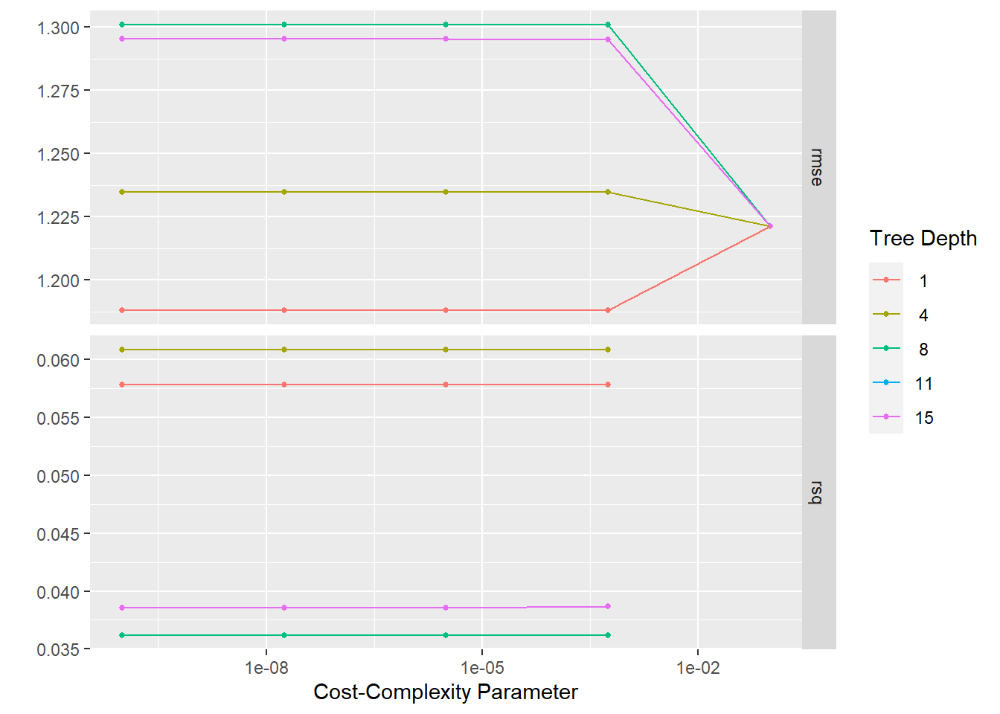
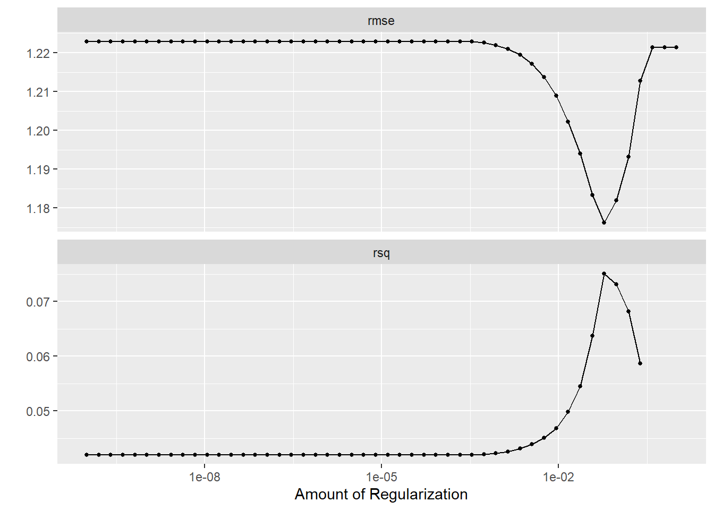
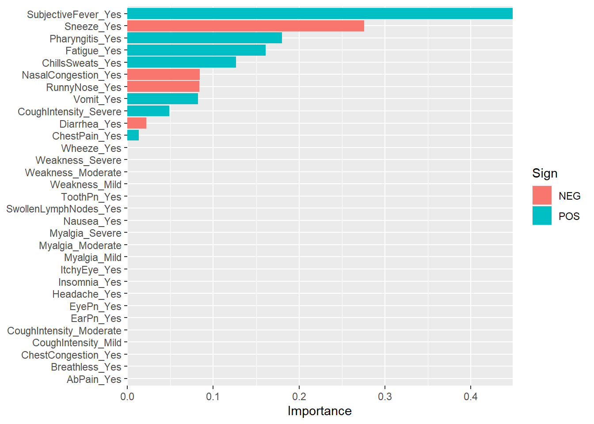
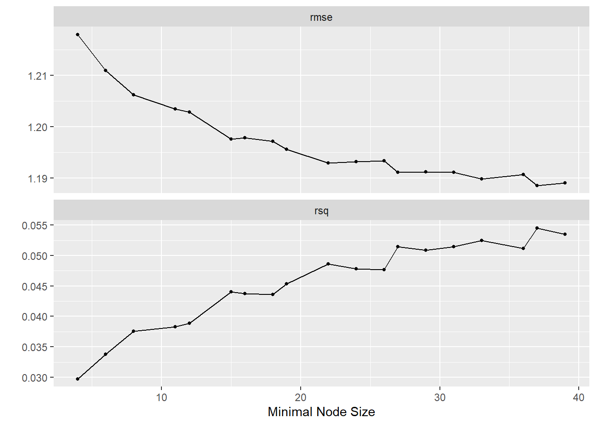

library(here)
library(tidyverse)
library(tidymodels)Machine Learning
Import lightly processed code…
flu <- readRDS(here("fluanalysis/data/processed_data/flu.rds"))#Feature/Variable removal Several symptoms exist within this dataset as a severity score and as Yes/No, and there is a duplicate for CoughYN… Fortunately for use, the name system of variables in this dataset makes this easy to achieve.
flu <- flu %>%
select(-ends_with("YN"), -matches("[0-9]"))#Categorical/Ordinal predictors
##the step below did not work flu_rec %>% step_dummy(Weakness, CoughIntensity, Myalgia) %>% step_ordinalscore()
sev_score <- c("None", "Mild", "Moderate", "Severe")#Low (“near-zero”) variance predictors
## Creating subset of binary predictors
binary_vars <- flu %>%
select_if(~ is.factor(.) && nlevels(.) == 2)
## Setting up logical vector where predictors have less than 50 entries equal 1.
binary_vars_tab <- binary_vars %>%
summarise_all(~ sum(table(.) < 50))
logi_vec <- binary_vars_tab == 1
## Use which to find the indices with 'TRUE' in the logical vector
indices <- which(logi_vec)
## ... extracting the names of the predictors
remove_vars <- names(binary_vars_tab[indices])
##Vision and hearing should be removed...
# And removing the identified binary predictors
flu <- flu %>%
select(-all_of(remove_vars))Now that the dataset has been processed a bit more, let’s move on to the setting up our model.
#Analysis code
Next, we’ll split the testing and training data
## setting the seed
set.seed(123)
## Put 3/4 of the data into the training set
data_split <- initial_split(flu, prop = 3/4)
# Create data frames for the two sets:
train_data <- training(data_split)
test_data <- testing(data_split)5x5 cross-validation
set.seed(123)
five_fold <- vfold_cv(train_data, v = 5, strata = BodyTemp)Set the recipe
flu_rec <- recipe(BodyTemp ~ ., data = train_data) %>%
step_dummy(all_predictors())Then we’ll set up a null model
null_mod <- null_model() %>%
set_engine("parsnip") %>%
set_mode("regression") %>%
translate()Null workflow
null_wflow <- workflow() %>%
add_model(null_mod) %>%
add_recipe(flu_rec)null_fit <- null_wflow %>%
fit(data=train_data)
null_fit %>%
extract_fit_parsnip() %>%
tidy()# A tibble: 1 × 1
value
<dbl>
1 99.0Mean body temp is 98.97
null_aug <- augment(null_fit, train_data)
null_aug %>%
select(BodyTemp, .pred) %>%
rmse(BodyTemp, .pred)# A tibble: 1 × 3
.metric .estimator .estimate
<chr> <chr> <dbl>
1 rmse standard 1.22Tree
library(rpart)
Attaching package: 'rpart'The following object is masked from 'package:dials':
prunetune_spec <-
decision_tree(
cost_complexity = tune(),
tree_depth = tune()
) %>%
set_engine("rpart") %>%
set_mode("regression")
tune_specDecision Tree Model Specification (regression)
Main Arguments:
cost_complexity = tune()
tree_depth = tune()
Computational engine: rpart tree_grid <- grid_regular(cost_complexity(),
tree_depth(),
levels = 5)
tree_grid# A tibble: 25 × 2
cost_complexity tree_depth
<dbl> <int>
1 0.0000000001 1
2 0.0000000178 1
3 0.00000316 1
4 0.000562 1
5 0.1 1
6 0.0000000001 4
7 0.0000000178 4
8 0.00000316 4
9 0.000562 4
10 0.1 4
# … with 15 more rowstree_grid %>%
count(tree_depth)# A tibble: 5 × 2
tree_depth n
<int> <int>
1 1 5
2 4 5
3 8 5
4 11 5
5 15 5## workflow for decision tree
tree_wf <- workflow() %>%
add_model(tune_spec) %>%
add_recipe(flu_rec)
tree_res <-
tree_wf %>%
tune_grid(resamples = five_fold,
grid = tree_grid)! Fold1: internal:
There was 1 warning in `dplyr::summarise()`.
ℹ In argument: `.estimate = metric_fn(truth = BodyTemp, estimate = .pr...
= na_rm)`.
ℹ In group 1: `cost_complexity = 0.1`, `tree_depth = 1`.
Caused by warning:
! A correlation computation is required, but `estimate` is constant an...
ℹ In argument: `.estimate = metric_fn(truth = BodyTemp, estimate = .pr...
= na_rm)`.
ℹ In group 1: `cost_complexity = 0.1`, `tree_depth = 4`.
Caused by warning:
! A correlation computation is required, but `estimate` is constant an...
ℹ In argument: `.estimate = metric_fn(truth = BodyTemp, estimate = .pr...
= na_rm)`.
ℹ In group 1: `cost_complexity = 0.1`, `tree_depth = 8`.
Caused by warning:
! A correlation computation is required, but `estimate` is constant an...
ℹ In argument: `.estimate = metric_fn(truth = BodyTemp, estimate = .pr...
= na_rm)`.
ℹ In group 1: `cost_complexity = 0.1`, `tree_depth = 11`.
Caused by warning:
! A correlation computation is required, but `estimate` is constant an...
ℹ In argument: `.estimate = metric_fn(truth = BodyTemp, estimate = .pr...
= na_rm)`.
ℹ In group 1: `cost_complexity = 0.1`, `tree_depth = 15`.
Caused by warning:
! A correlation computation is required, but `estimate` is constant an...! Fold2: internal:
There was 1 warning in `dplyr::summarise()`.
ℹ In argument: `.estimate = metric_fn(truth = BodyTemp, estimate = .pr...
= na_rm)`.
ℹ In group 1: `cost_complexity = 0.1`, `tree_depth = 1`.
Caused by warning:
! A correlation computation is required, but `estimate` is constant an...
ℹ In argument: `.estimate = metric_fn(truth = BodyTemp, estimate = .pr...
= na_rm)`.
ℹ In group 1: `cost_complexity = 0.1`, `tree_depth = 4`.
Caused by warning:
! A correlation computation is required, but `estimate` is constant an...
ℹ In argument: `.estimate = metric_fn(truth = BodyTemp, estimate = .pr...
= na_rm)`.
ℹ In group 1: `cost_complexity = 0.1`, `tree_depth = 8`.
Caused by warning:
! A correlation computation is required, but `estimate` is constant an...
ℹ In argument: `.estimate = metric_fn(truth = BodyTemp, estimate = .pr...
= na_rm)`.
ℹ In group 1: `cost_complexity = 0.1`, `tree_depth = 11`.
Caused by warning:
! A correlation computation is required, but `estimate` is constant an...
ℹ In argument: `.estimate = metric_fn(truth = BodyTemp, estimate = .pr...
= na_rm)`.
ℹ In group 1: `cost_complexity = 0.1`, `tree_depth = 15`.
Caused by warning:
! A correlation computation is required, but `estimate` is constant an...! Fold3: internal:
There was 1 warning in `dplyr::summarise()`.
ℹ In argument: `.estimate = metric_fn(truth = BodyTemp, estimate = .pr...
= na_rm)`.
ℹ In group 1: `cost_complexity = 0.1`, `tree_depth = 1`.
Caused by warning:
! A correlation computation is required, but `estimate` is constant an...
ℹ In argument: `.estimate = metric_fn(truth = BodyTemp, estimate = .pr...
= na_rm)`.
ℹ In group 1: `cost_complexity = 0.1`, `tree_depth = 4`.
Caused by warning:
! A correlation computation is required, but `estimate` is constant an...
ℹ In argument: `.estimate = metric_fn(truth = BodyTemp, estimate = .pr...
= na_rm)`.
ℹ In group 1: `cost_complexity = 0.1`, `tree_depth = 8`.
Caused by warning:
! A correlation computation is required, but `estimate` is constant an...
ℹ In argument: `.estimate = metric_fn(truth = BodyTemp, estimate = .pr...
= na_rm)`.
ℹ In group 1: `cost_complexity = 0.1`, `tree_depth = 11`.
Caused by warning:
! A correlation computation is required, but `estimate` is constant an...
ℹ In argument: `.estimate = metric_fn(truth = BodyTemp, estimate = .pr...
= na_rm)`.
ℹ In group 1: `cost_complexity = 0.1`, `tree_depth = 15`.
Caused by warning:
! A correlation computation is required, but `estimate` is constant an...! Fold4: internal:
There was 1 warning in `dplyr::summarise()`.
ℹ In argument: `.estimate = metric_fn(truth = BodyTemp, estimate = .pr...
= na_rm)`.
ℹ In group 1: `cost_complexity = 0.1`, `tree_depth = 1`.
Caused by warning:
! A correlation computation is required, but `estimate` is constant an...
ℹ In argument: `.estimate = metric_fn(truth = BodyTemp, estimate = .pr...
= na_rm)`.
ℹ In group 1: `cost_complexity = 0.1`, `tree_depth = 4`.
Caused by warning:
! A correlation computation is required, but `estimate` is constant an...
ℹ In argument: `.estimate = metric_fn(truth = BodyTemp, estimate = .pr...
= na_rm)`.
ℹ In group 1: `cost_complexity = 0.1`, `tree_depth = 8`.
Caused by warning:
! A correlation computation is required, but `estimate` is constant an...
ℹ In argument: `.estimate = metric_fn(truth = BodyTemp, estimate = .pr...
= na_rm)`.
ℹ In group 1: `cost_complexity = 0.1`, `tree_depth = 11`.
Caused by warning:
! A correlation computation is required, but `estimate` is constant an...
ℹ In argument: `.estimate = metric_fn(truth = BodyTemp, estimate = .pr...
= na_rm)`.
ℹ In group 1: `cost_complexity = 0.1`, `tree_depth = 15`.
Caused by warning:
! A correlation computation is required, but `estimate` is constant an...! Fold5: internal:
There was 1 warning in `dplyr::summarise()`.
ℹ In argument: `.estimate = metric_fn(truth = BodyTemp, estimate = .pr...
= na_rm)`.
ℹ In group 1: `cost_complexity = 0.1`, `tree_depth = 1`.
Caused by warning:
! A correlation computation is required, but `estimate` is constant an...
ℹ In argument: `.estimate = metric_fn(truth = BodyTemp, estimate = .pr...
= na_rm)`.
ℹ In group 1: `cost_complexity = 0.1`, `tree_depth = 4`.
Caused by warning:
! A correlation computation is required, but `estimate` is constant an...
ℹ In argument: `.estimate = metric_fn(truth = BodyTemp, estimate = .pr...
= na_rm)`.
ℹ In group 1: `cost_complexity = 0.1`, `tree_depth = 8`.
Caused by warning:
! A correlation computation is required, but `estimate` is constant an...
ℹ In argument: `.estimate = metric_fn(truth = BodyTemp, estimate = .pr...
= na_rm)`.
ℹ In group 1: `cost_complexity = 0.1`, `tree_depth = 11`.
Caused by warning:
! A correlation computation is required, but `estimate` is constant an...
ℹ In argument: `.estimate = metric_fn(truth = BodyTemp, estimate = .pr...
= na_rm)`.
ℹ In group 1: `cost_complexity = 0.1`, `tree_depth = 15`.
Caused by warning:
! A correlation computation is required, but `estimate` is constant an...tree_res %>%
collect_metrics() # A tibble: 50 × 8
cost_complexity tree_depth .metric .estimator mean n std_err .config
<dbl> <int> <chr> <chr> <dbl> <int> <dbl> <chr>
1 0.0000000001 1 rmse standard 1.19 5 0.0293 Preproc…
2 0.0000000001 1 rsq standard 0.0578 5 0.0137 Preproc…
3 0.0000000178 1 rmse standard 1.19 5 0.0293 Preproc…
4 0.0000000178 1 rsq standard 0.0578 5 0.0137 Preproc…
5 0.00000316 1 rmse standard 1.19 5 0.0293 Preproc…
6 0.00000316 1 rsq standard 0.0578 5 0.0137 Preproc…
7 0.000562 1 rmse standard 1.19 5 0.0293 Preproc…
8 0.000562 1 rsq standard 0.0578 5 0.0137 Preproc…
9 0.1 1 rmse standard 1.22 5 0.0295 Preproc…
10 0.1 1 rsq standard NaN 0 NA Preproc…
# … with 40 more rows#visualize
tree_res %>%
autoplot()
#Selecting the best tree using rmse.
best_tree <- tree_res %>%
select_best(metric = "rmse")
best_tree # A tibble: 1 × 3
cost_complexity tree_depth .config
<dbl> <int> <chr>
1 0.0000000001 1 Preprocessor1_Model01tree_ff_wf <- tree_wf %>%
finalize_workflow(best_tree)
tree_ff_wf %>%
fit(train_data)══ Workflow [trained] ══════════════════════════════════════════════════════════
Preprocessor: Recipe
Model: decision_tree()
── Preprocessor ────────────────────────────────────────────────────────────────
1 Recipe Step
• step_dummy()
── Model ───────────────────────────────────────────────────────────────────────
n= 547
node), split, n, deviance, yval
* denotes terminal node
1) root 547 817.5396 98.97294
2) SubjectiveFever_Yes< 0.5 166 113.3884 98.53735 *
3) SubjectiveFever_Yes>=0.5 381 658.9308 99.16273 *#Lasso
##Setting up recipe.
flu_rec_lasso <- recipe(BodyTemp ~ ., data = train_data) %>%
step_dummy(all_predictors())
lasso_spec <- linear_reg(penalty = 0.1, mixture = 1) %>%
set_engine("glmnet")
#Setting work flow
flu_wflow <- workflow() %>%
add_recipe(flu_rec_lasso)
flu_lasso_fit <- flu_wflow %>%
add_model(lasso_spec) %>%
fit(data = train_data)
flu_lasso_fit %>%
pull_workflow_fit() %>%
tidy()Warning: `pull_workflow_fit()` was deprecated in workflows 0.2.3.
ℹ Please use `extract_fit_parsnip()` instead.Warning: package 'glmnet' was built under R version 4.2.3Loading required package: MatrixWarning: package 'Matrix' was built under R version 4.2.2
Attaching package: 'Matrix'The following objects are masked from 'package:tidyr':
expand, pack, unpackLoaded glmnet 4.1-7# A tibble: 32 × 3
term estimate penalty
<chr> <dbl> <dbl>
1 (Intercept) 98.7 0.1
2 SwollenLymphNodes_Yes 0 0.1
3 ChestCongestion_Yes 0 0.1
4 ChillsSweats_Yes 0.0474 0.1
5 NasalCongestion_Yes -0.00553 0.1
6 Sneeze_Yes -0.216 0.1
7 Fatigue_Yes 0.0304 0.1
8 SubjectiveFever_Yes 0.392 0.1
9 Headache_Yes 0 0.1
10 Weakness_Mild 0 0.1
# … with 22 more rows##Tune Lasso parameters
tune_spec <- linear_reg(penalty = tune(), mixture = 1) %>%
set_engine("glmnet")
lambda_grid <- grid_regular(penalty(), levels = 50)# tune the grid using our workflow object.
doParallel::registerDoParallel()
set.seed(2020)
lasso_grid <- tune_grid(
flu_wflow %>% add_model(tune_spec),
resamples = five_fold,
grid = lambda_grid)Let take a look at the results
lasso_grid %>%
collect_metrics()# A tibble: 100 × 7
penalty .metric .estimator mean n std_err .config
<dbl> <chr> <chr> <dbl> <int> <dbl> <chr>
1 1 e-10 rmse standard 1.22 5 0.0385 Preprocessor1_Model01
2 1 e-10 rsq standard 0.0420 5 0.00979 Preprocessor1_Model01
3 1.60e-10 rmse standard 1.22 5 0.0385 Preprocessor1_Model02
4 1.60e-10 rsq standard 0.0420 5 0.00979 Preprocessor1_Model02
5 2.56e-10 rmse standard 1.22 5 0.0385 Preprocessor1_Model03
6 2.56e-10 rsq standard 0.0420 5 0.00979 Preprocessor1_Model03
7 4.09e-10 rmse standard 1.22 5 0.0385 Preprocessor1_Model04
8 4.09e-10 rsq standard 0.0420 5 0.00979 Preprocessor1_Model04
9 6.55e-10 rmse standard 1.22 5 0.0385 Preprocessor1_Model05
10 6.55e-10 rsq standard 0.0420 5 0.00979 Preprocessor1_Model05
# … with 90 more rowslasso_grid %>%
autoplot
#Let's find the parameter with the lowest rmse
lowest_rmse <- lasso_grid %>%
select_best("rmse")
final_lasso_wf <- finalize_workflow(
flu_wflow %>% add_model(tune_spec),
lowest_rmse)lasso_ff <- final_lasso_wf %>%
fit(train_data)
lasso_ff ══ Workflow [trained] ══════════════════════════════════════════════════════════
Preprocessor: Recipe
Model: linear_reg()
── Preprocessor ────────────────────────────────────────────────────────────────
1 Recipe Step
• step_dummy()
── Model ───────────────────────────────────────────────────────────────────────
Call: glmnet::glmnet(x = maybe_matrix(x), y = y, family = "gaussian", alpha = ~1)
Df %Dev Lambda
1 0 0.00 0.287500
2 1 0.94 0.262000
3 1 1.72 0.238700
4 1 2.37 0.217500
5 2 3.38 0.198200
6 2 4.27 0.180600
7 2 5.01 0.164500
8 2 5.62 0.149900
9 2 6.12 0.136600
10 3 6.59 0.124500
11 5 7.23 0.113400
12 6 7.89 0.103300
13 8 8.54 0.094150
14 8 9.16 0.085790
15 9 9.68 0.078170
16 9 10.19 0.071220
17 11 10.63 0.064890
18 11 11.08 0.059130
19 12 11.45 0.053880
20 15 11.83 0.049090
21 15 12.15 0.044730
22 16 12.43 0.040760
23 17 12.69 0.037140
24 19 12.93 0.033840
25 19 13.18 0.030830
26 20 13.40 0.028090
27 22 13.59 0.025600
28 22 13.76 0.023320
29 23 13.90 0.021250
30 23 14.02 0.019360
31 24 14.12 0.017640
32 24 14.21 0.016070
33 24 14.29 0.014650
34 24 14.35 0.013350
35 25 14.40 0.012160
36 26 14.46 0.011080
37 26 14.51 0.010100
38 26 14.55 0.009199
39 27 14.59 0.008381
40 27 14.62 0.007637
41 28 14.64 0.006958
42 28 14.67 0.006340
43 28 14.69 0.005777
44 27 14.70 0.005264
45 28 14.72 0.004796
46 28 14.73 0.004370
...
and 31 more lines.##Let look at the most important predictors
library(vip)Warning: package 'vip' was built under R version 4.2.3
Attaching package: 'vip'The following object is masked from 'package:utils':
vilasso_ff %>%
pull_workflow_fit() %>%
vi(lambda = lowest_rmse$penalty) %>%
mutate(
Importance = abs(Importance),
Variable = fct_reorder(Variable, Importance)
) %>%
ggplot(aes(x = Importance, y = Variable, fill = Sign)) +
geom_col() +
scale_x_continuous(expand = c(0, 0)) +
labs(y = NULL)
We can see that subjective fever is the most important predictor of body temperature and sneezing negatively correlated with body temperature.
##Random forest model
rf_spec <- rand_forest(min_n = tune(),
trees = 1000) %>%
set_engine("ranger") %>%
set_mode("regression")
rf_specRandom Forest Model Specification (regression)
Main Arguments:
trees = 1000
min_n = tune()
Computational engine: ranger Create tuning workflow for random forest model
tune_wf <- workflow() %>%
add_recipe(flu_rec) %>%
add_model(rf_spec)doParallel::registerDoParallel()
set.seed(345)
tune_res <- tune_grid(
tune_wf,
resamples = five_fold,
grid = 20
)
#Visualize..
tune_res %>%
autoplot()
best_rf <- tune_res %>%
select_best(metric = "rmse")
rf_final_wf <- tune_wf %>% finalize_workflow(best_rf)
rf_final_wf %>%
fit(data = train_data)══ Workflow [trained] ══════════════════════════════════════════════════════════
Preprocessor: Recipe
Model: rand_forest()
── Preprocessor ────────────────────────────────────────────────────────────────
1 Recipe Step
• step_dummy()
── Model ───────────────────────────────────────────────────────────────────────
Ranger result
Call:
ranger::ranger(x = maybe_data_frame(x), y = y, num.trees = ~1000, min.node.size = min_rows(~37L, x), num.threads = 1, verbose = FALSE, seed = sample.int(10^5, 1))
Type: Regression
Number of trees: 1000
Sample size: 547
Number of independent variables: 31
Mtry: 5
Target node size: 37
Variable importance mode: none
Splitrule: variance
OOB prediction error (MSE): 1.389161
R squared (OOB): 0.07223827 Fitting the last model to testing data
set.seed(345)
rf_final_fit <-
rf_final_wf %>%
last_fit(data_split)Warning: package 'ranger' was built under R version 4.2.3rf_final_fit %>%
collect_metrics()# A tibble: 2 × 4
.metric .estimator .estimate .config
<chr> <chr> <dbl> <chr>
1 rmse standard 1.12 Preprocessor1_Model1
2 rsq standard 0.0119 Preprocessor1_Model1